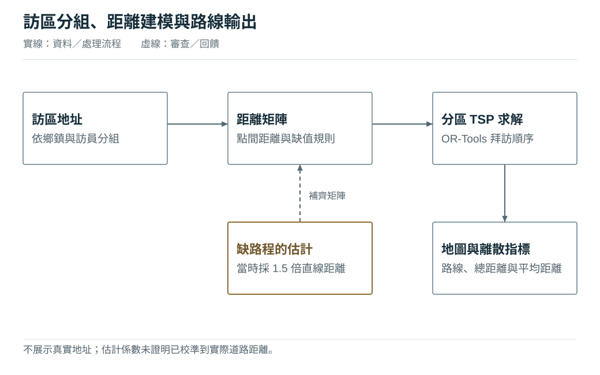

情境與目標
訪區分散程度影響訪員路程及預算，需可計算距離及代表路線。
系統架構與流程
架構說明
- 輸入
- 抽樣地址與訪員負責範圍；公開頁不展示名單或真實座標。
- 處理方式
- 先依訪區分組，再建立點間距離矩陣；對缺值保留估計規則，分區求TSP。
- 產出
- 訪區總距離、平均距離、拜訪順序與路線地圖，供調查規劃。
流程圖

成果與驗證範圍
實際產出
輸出訪區總距離、平均距離、樣本順序及路線地圖，供調查規劃。
驗證與限制
缺失路程採當時的估計規則；結果供訪區路線及預算規劃，實際路程仍需另行校準。